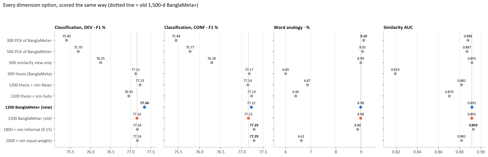
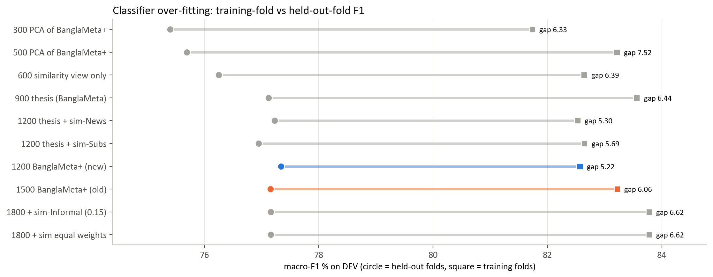
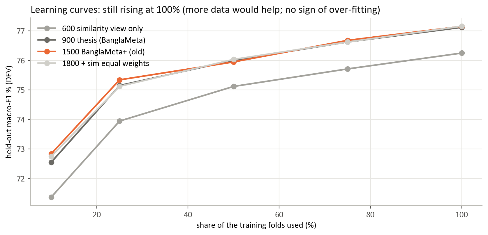
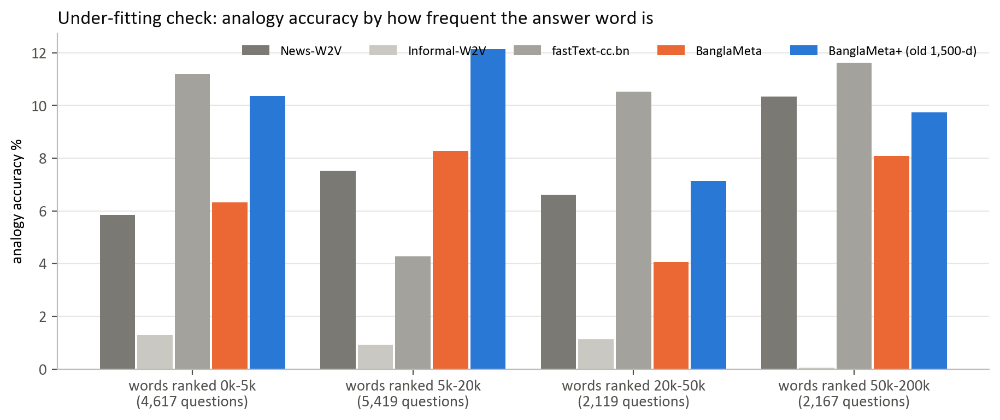
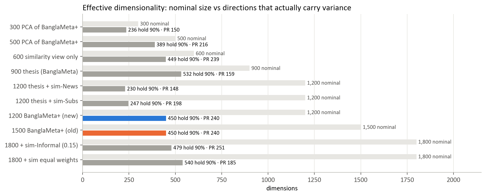

webapp/backend/experiments/dimension_study.py and eps_1200.py.
CONF results of the new variants are exploratory (the thesis used CONF once, for its confirmatory test).| Option | dims | DEV F1 | CONF F1 | Analogy all | Analogy test half | Sim AUC | train–held-out gap | dims for 90% |
|---|---|---|---|---|---|---|---|---|
| 300 PCA of BanglaMeta+ | 300 | 75.40 | 75.44 | 9.10 | 8.87 | 0.8878 | 6.33 | 236 |
| 500 PCA of BanglaMeta+ | 500 | 75.70 | 75.77 | 9.05 | 8.81 | 0.8868 | 7.52 | 389 |
| 600 similarity view only | 600 | 76.25 | 76.28 | 8.99 | 8.66 | 0.8914 | 6.39 | 449 |
| 900 thesis (BanglaMeta) | 900 | 77.12 | 77.17 | 6.00 | 5.62 | 0.8191 | 6.44 | 532 |
| 1200 thesis + sim-News | 1,200 | 77.23 | 77.14 | 6.87 | 6.56 | 0.8817 | 5.30 | 230 |
| 1200 thesis + sim-Subs | 1,200 | 76.95 | 77.23 | 6.40 | 6.36 | 0.8701 | 5.69 | 247 |
| 1200 BanglaMeta+ (new) | 1,200 | 77.34 | 77.22 | 8.98 | 8.66 | 0.8914 | 5.22 | 450 |
| 1500 BanglaMeta+ (old) | 1,500 | 77.16 | 77.15 | 8.98 | 8.65 | 0.8913 | 6.06 | 450 |
| 1800 + sim-Informal (0.15) | 1,800 | 77.16 | 77.29 | 8.86 | 8.45 | 0.8928 | 6.62 | 479 |
| 1800 + sim equal weights | 1,800 | 77.16 | 77.29 | 6.62 | 6.30 | 0.8818 | 6.62 | 540 |




